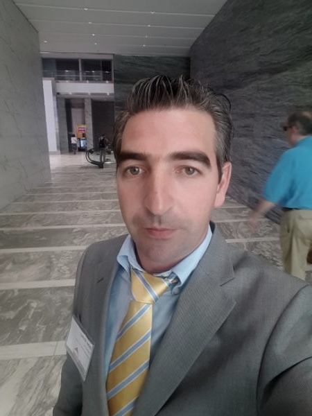

|  |
PROFESSIONAL SUMMARY Architectural Design Professional with 5+ years of experience in design, project coordination and construction management as Architect for legal, urban planning and construction companies. Seeking opportunity to utilize skills as an Architectural Drafter. |
CAD drafting techniques
|
IT Skills:
|